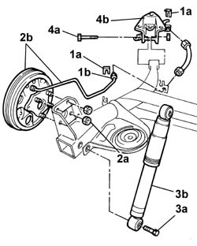
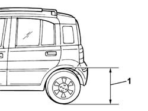

4420D20 rear suspension axle -replace- includes r+r, check, parts transfer and bleeding
- Path
- Procedures > 44 SUSPENSION AND WHEELS > 4420 REAR SUSPENSION > 4420D REAR SUSPENSION AXLE/CROSSBEAM > 4420D20 rear suspension axle -replace- includes r+r, check, parts transfer and bleeding
- Kind
- repair procedure (removal / refitting; the operation number is the code)
- Applies to
- all engines; all production periods
- Interactive page
- https://sloeber94.github.io/elrnDB-fPnd/en/#/2752815
Applies to: all engines; all production periods
 Removing
Removing
 Refitting
Refitting3320B34 Rear brake DRUMS - R.R.
4420D10 REAR SUSPENSION AXLE - R+R INCLUDES BLEEDING
Place the rear axle on the bench.
1. Unscrew fixing springs (1a) and undo brake pipe connector (1b).
2. Undo retaining nuts (2a) and remove rear brake assembly (2b) complete with rigid brake pipe.
3. Undo the fixing bolt (3a) and remove the rear shock absorber (3b).
4. Undo the fixing bolt (4a) and remove the rear axle support (4b).

Applies to: all engines; all production periods
Refitting
RemovingFit the rear axle supports.
Tighten the bolt fixing the support to the axle.
Fit the rear shock absorber and tighten the bolt fixing it to the rear axle.
Fit the rear brake assembly together with rigid brake pipe and tighten the retaining nuts onto the rear axle to torque.
 | Fastening | Component | Ø | Value (daNm) |
|---|---|---|---|---|
- | Nut | REAR KNUCKLE | M10 x 1.25 | 6.9 |
Connect brake pipe attachment.
Fit the retaining springs of the flexible and rigid sections of the rear axle brake pipe.
4420D10 REAR SUSPENSION AXLE - R+R INCLUDES BLEEDING
3320B34 Rear brake DRUMS - R.R.
Place the vehicle in the theoretical load conditions in order to torque tighten the bolts tightened previously.
Take the car to a platform bridge so that the wheels can rest on the ground.
Place the vehicle in standard 'A' conditions, i.e. with the spare wheel, tool kit, all fluids and a full tank of fuel. Check that the tyre pressures are correct.
 | Measurement | Value | |
|---|---|---|---|
- | Front wheel pressure (bar) | 2 |
| Measurement | Value | |
|---|---|---|---|
- | Rear wheel pressure (bar) | 1.9 |
1. Check that the distance between the rear wing maximum curvature point and the wheel centre is 626 mm.

Applies to: all engines; all production periods
Tighten the bolts securing the shock absorber to the axle to torque.
| Fastening | Component | Ø | Value (daNm) |
|---|---|---|---|---|
- | Bolt | REAR DAMPER | M12 x 1.25 | (Lower) 7 |
Tighten the bolt securing the axle support to torque.
| Fastening | Component | Ø | Value (daNm) |
|---|---|---|---|---|
- | Bolt | FLEXIBLE BLOCKS RETAINING AXLE TO BODY | M12 x 1.25 | 11.5 |
3380A04 handbrake - check travel
0010T64 brake and or clutch fluid check level and top up as necessary